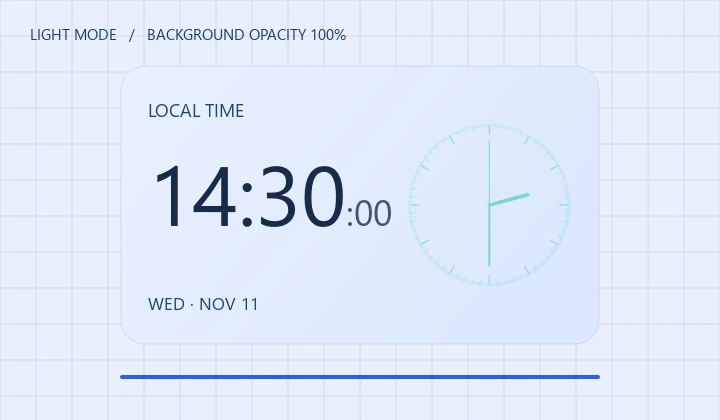

Air Calendar
공식 홍보자료
바탕화면 위젯, 업무 관리, 색상과 투명도 설정을 소개할 때 사용할 Air Calendar의 공식 이미지와 문구입니다.
Windows 유료 앱 · 기능 소개 기준 5.2.0 공개 릴리스

공식 이미지와 GIF
실제 앱 화면과 예시 데이터를 사용했습니다.




기능별 앱 화면
기능 설명이나 사용 가이드에 넣을 원본입니다.
월간 달력 PNG ↓
위젯 전용 모드 PNG ↓
전체 업무 관리 WEBP ↓
위젯 디자인 예시 WEBP ↓
라이트 모드·모양 설정 WEBP ↓
다크 모드·모양 설정 WEBP ↓
외부 캘린더 연결 설정 PNG ↓
6트랙 루프 믹서 PNG ↓


Google·Outlook·iCloud 일정은 계정 준비와 권한이 필요합니다. 네이버와 ICS는 읽기 전용입니다. 서비스별 연결 안내 ↗
4개 언어 소개문
언어에 맞는 홈페이지 링크를 포함했습니다.